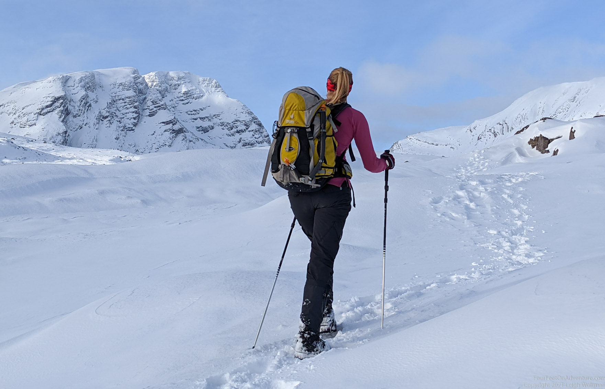
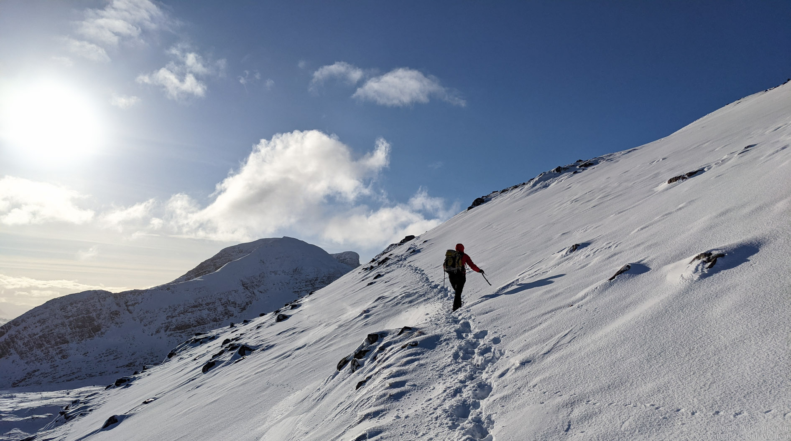
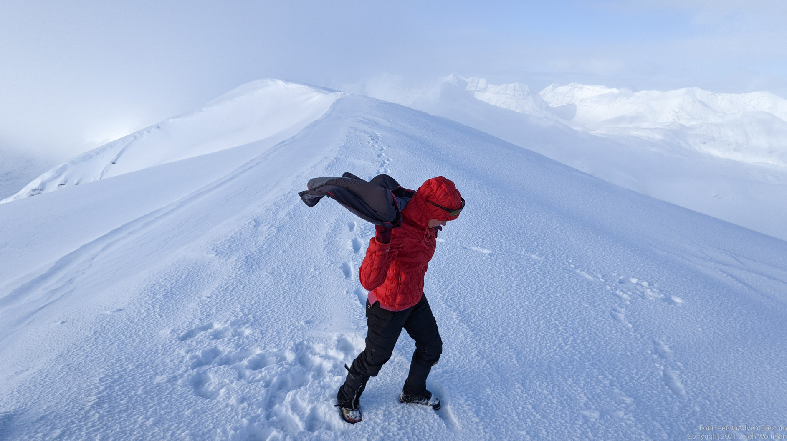
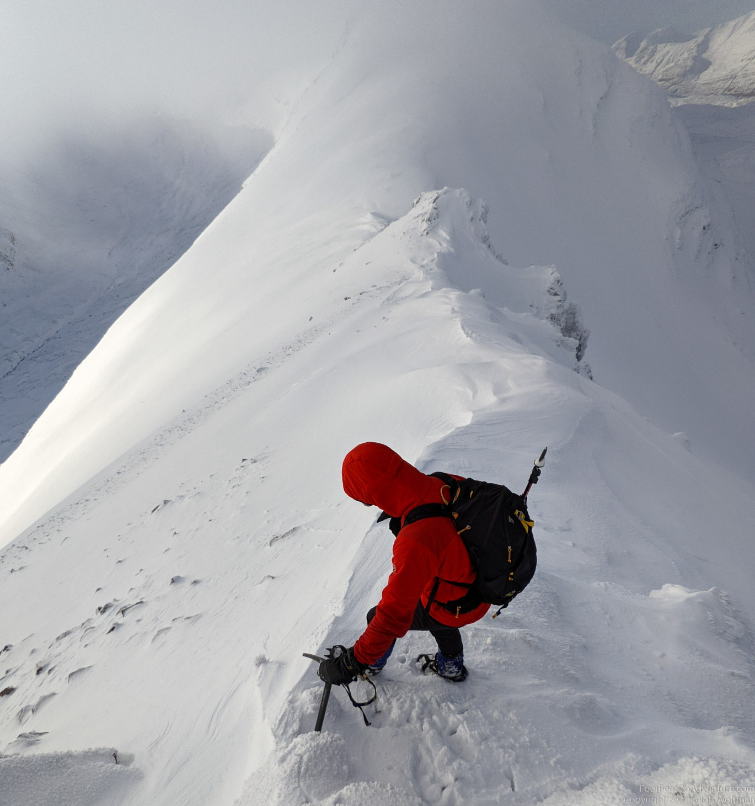
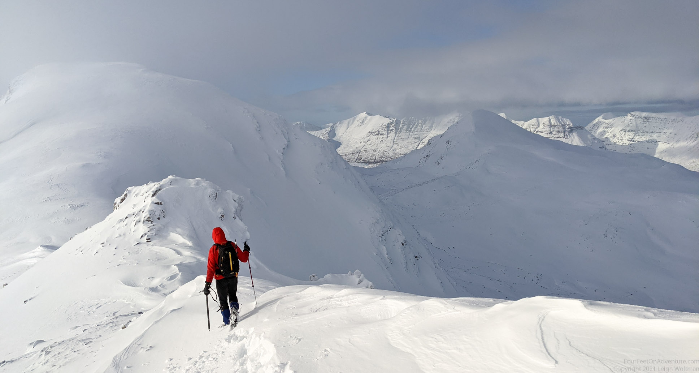
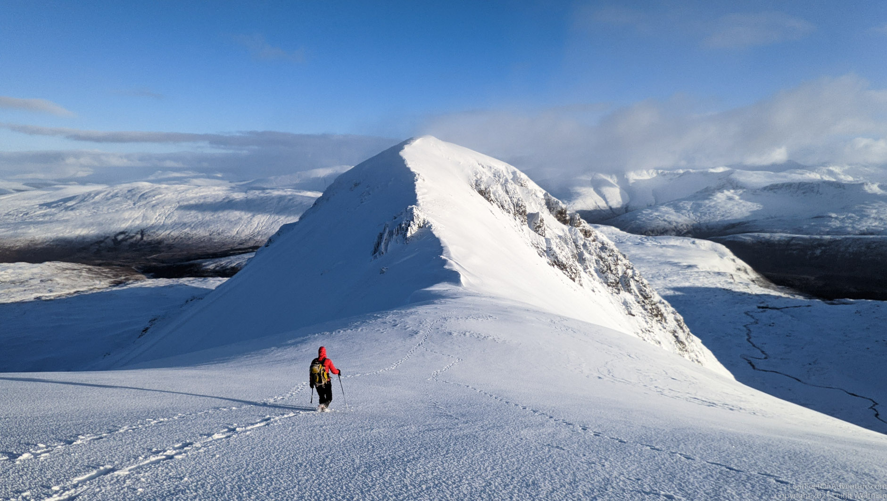
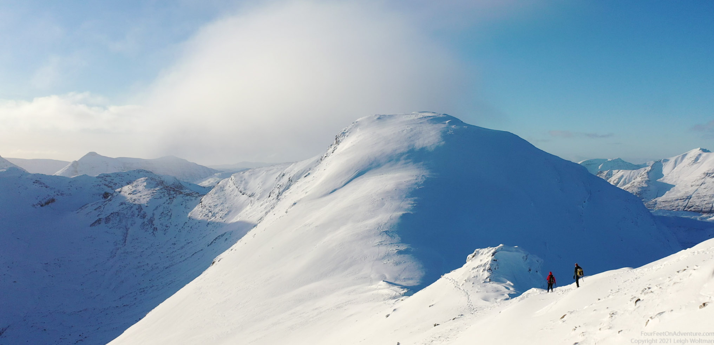

The title may have needed a spoiler alert first. We didn’t quite make it to the top, and the title is in anticipation of a second try. Often we do make it to the top, but sometimes not. It doesn’t really matter to us, what really counts are: the journey, good decision making, preventing epics, and enjoying the view and company.
With a considerable avalanche risk on some aspects, we decided this route would work well for us. We parked and crossed over the railway into a beautiful meandering path up to the saddle. The hills looks huge!

With the energy of a week worth of desk work we were at the saddle in no time, and looked into a beautiful valley surrounded by hills. We hadn’t decided fully what to do from there and wanted to let the snow conditions decide. We made up our minds to try Beinn Liath Mor. We were lucky, 2 people were just coming down it and they had left a nice trail to go up. Otherwise there would have been hours of hard work ahead. Maybe less romantic, but definitely more energy efficient. The thick layer of powder was amazing for skiing, but neither of us have our ski gear in Scotland. Or snowshoes for that matter. So we rely on knee deep wading, icy snow, and pre-trailed routes. These powdery conditions are rare in Scotland, so it’s a difficult choice whether to invest in gear or to adjust.
Up we go, and once the hard work is behind us we are welcomed by amazing views. All around the impressive white hills glisten in the sun. And we seem to be the only people in the world!


There are a couple of tops on the ridge before we get to the highest one that would mark this hill off our list. Only the first top is trailed, so we are the first ones going further. What an enjoyment. The ridge is narrow at places, and we have to use our ice axes to scramble around and over rocks.


Finally we make it to the second last top. Oef, it still looks far to that last one, although we can’t even see it as it hides in the clouds. We are not super keen on a whiteout, nor are we at climbing down and up twice. Going on after the top is a possibility, but it means going down through a glen that would be safe for avalanches, but we are worried the snow will be deep and there might not be a trail. It could take us hours. It is much easier to walk over the tops, because the snow at higher altitude is harder due to colder temperatures, and also not as thick as it gets blown off the tops in the wind. We decide to turn around.


Not a bad choice, we can enjoy the sun for much longer walking on the ridge, and the colours of the surrounding hills turn amazingly soft in the setting sun. Once down at a cairn from where the trails split, we sit down and eat a snack. We meet two climbers who came out of the glen that we would have walked out off. They tell us about their day and that they saw us on the ridge. They sit down too, properly distanced, and we all feel content and tired. After a bit of chat and a snack, we all decide to get up and walk back to the cars.
Just before we get to the cars we cross the railway again. There is a train station, but it’s one of those where the train doesn’t stop. Apparently you wave at the train which would be a signal for it to slow down, stop, and take you on board. Would that really work? We’d love to find out, but not today. We continue walking and, no way, we see a train approach (this happens maybe two or three times a day only). It goes slow indeed, but we are still not convinced it would see us in time to stop. Maybe it would drive backwards after it stopped to go back to the station? We’ll go back and find out one day. For now it’s back to the car to a warm thermos of tea and then back home.